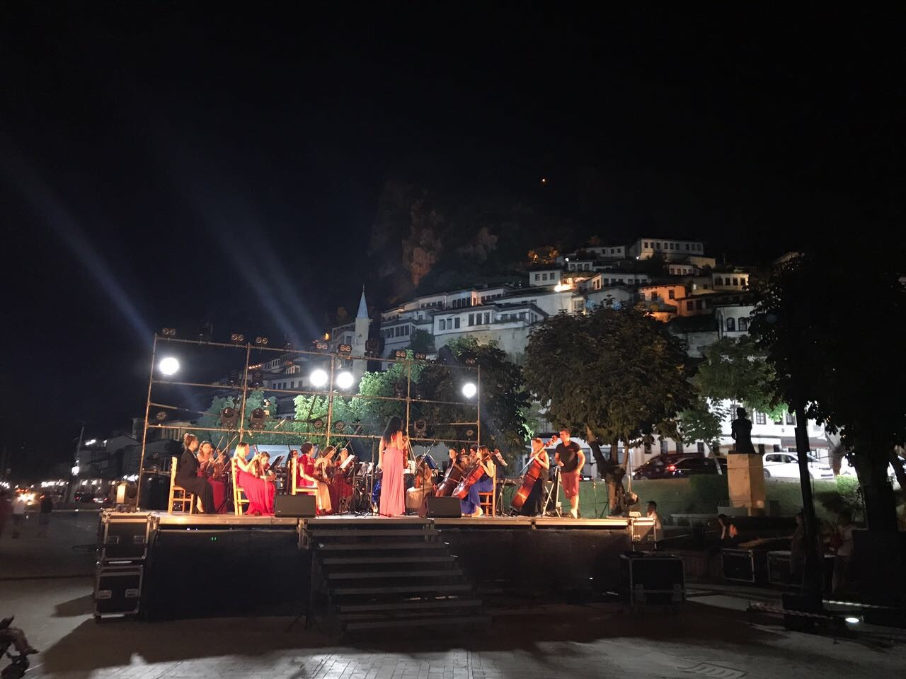
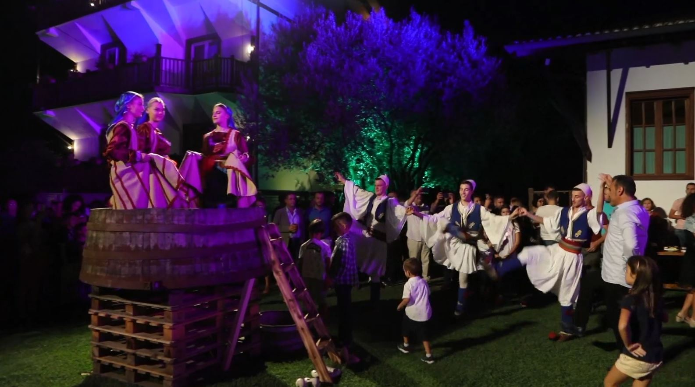

Për të marrë pjesë në këto aktivitete ju nevojitet që të regjistroheni paraprakisht!
Plotësoni formularin më poshtë.
| Aktiviteti | Festivali Multikulturor | Festa e Verës |
|---|---|---|
| Veprimtaritë |
|
|
| Data e Zhvillimit | 13 Korrik | 12 Gusht |
|  |  |